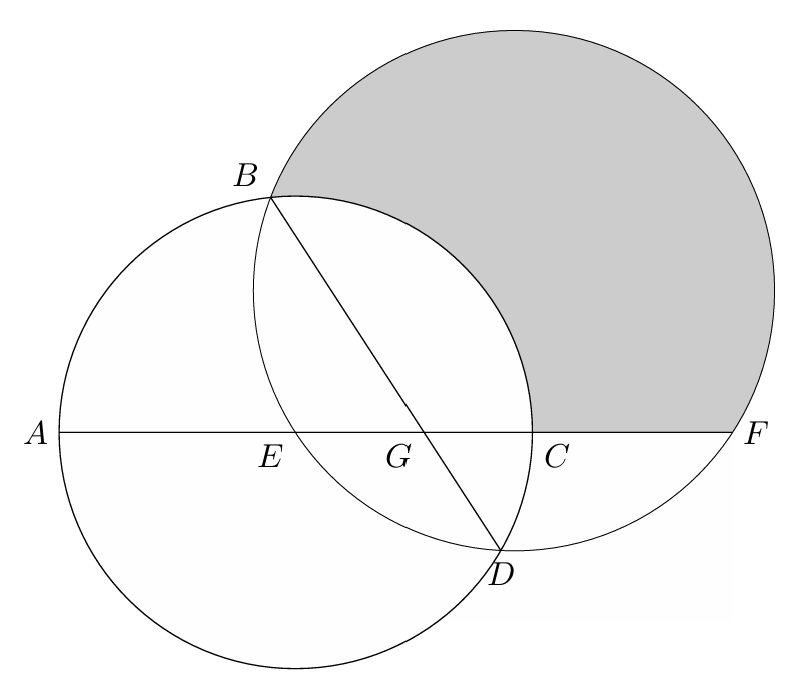
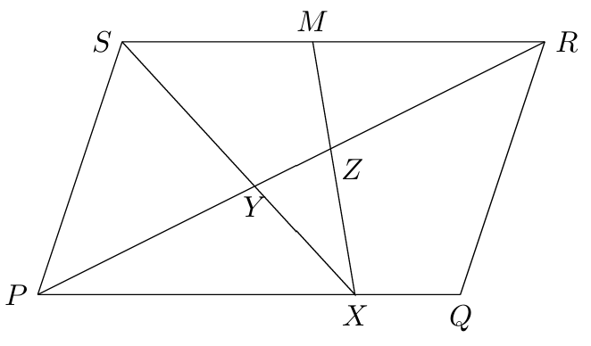
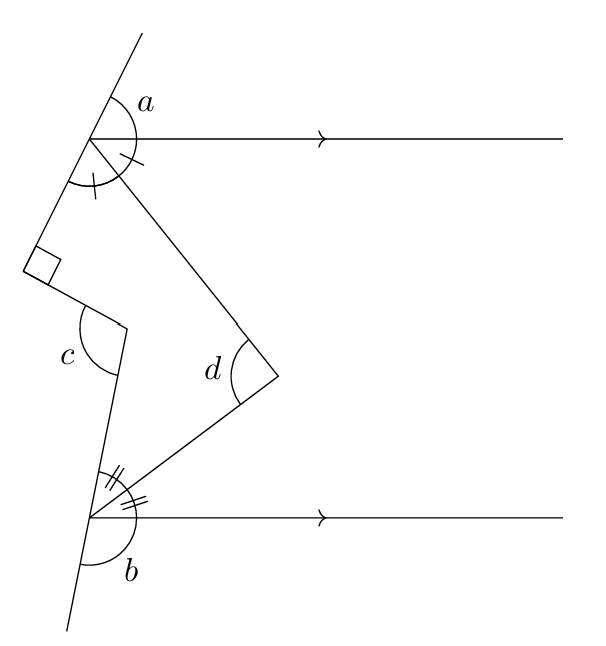
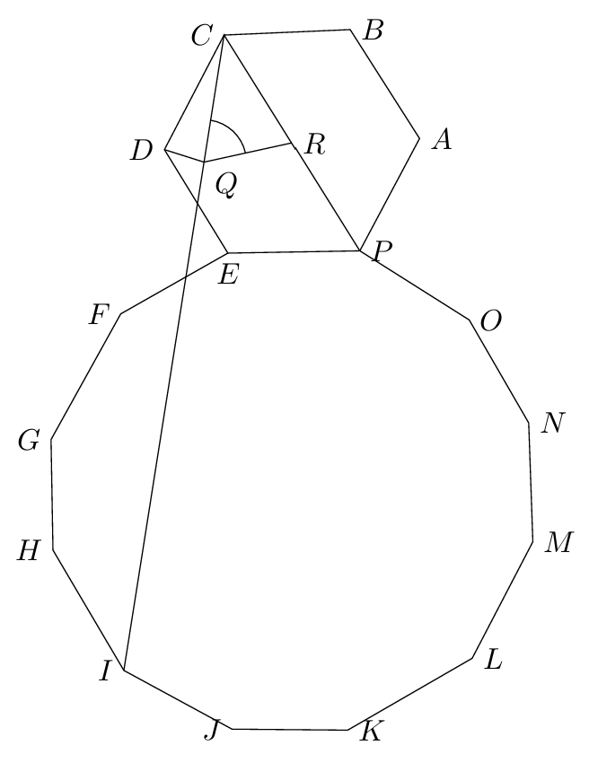
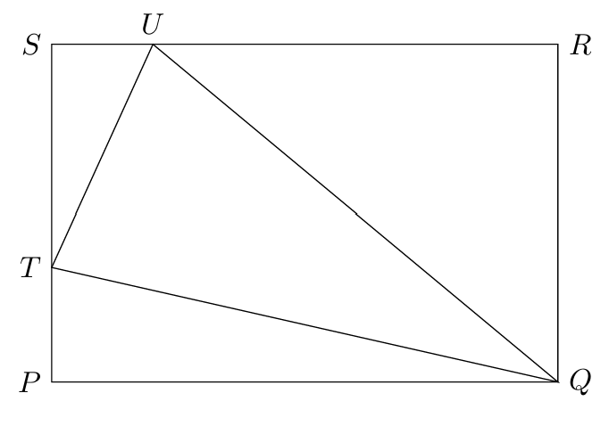
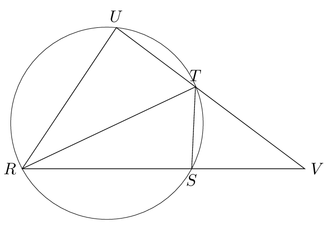
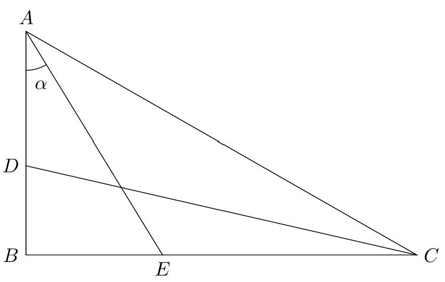
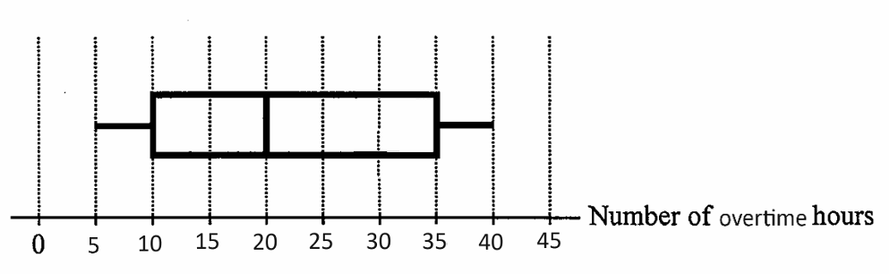
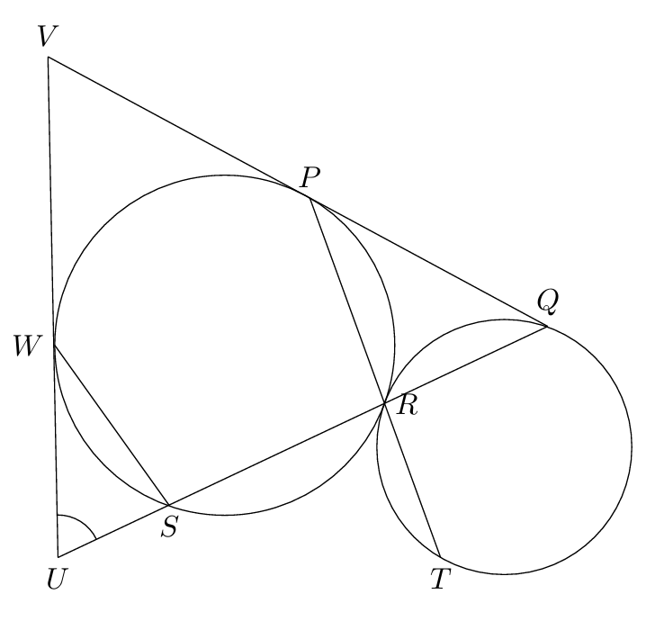

After pressing the 'Start' button, a count-down timer will appear in the top right corner. When the timer reaches zero, the test will be automatically sumbitted.
The answers cannot be saved. If you exit the website during the test, you have to start over.
There are 45 questions in total. All question carry equal marks.
ANSWER ALL QUESTIONS. To mark an answer, click on the circular radio button at the left of the choices of the question.
No marks will be deducted for wrong answers.
1. If \(\cfrac{3a+4b}{6a+7b}=\cfrac{5a+2b}{4a+9b}\) and \(a\neq b\) , then \(a=\)
\(\cfrac{4b-3}{b^2+2}\)
\(\cfrac{7}{13}\,b\)
\(-\cfrac{2}{11}\,b\)
\(-\cfrac{11}{9}\,b\)
5. If \(m\), \(n\) and \(c\) are positive constants such that \( (mx+5)(x-n)+2m-1\equiv (n-4)(x+1)x-(2n-3)(x+c) \) , then \(c=\)
\(2\)
\(3\)
\(6\)
\(9\)
6. The number of integers satisfying the inequality \(3x-8 < \cfrac{2x+7}{2}\leq 3(2x+3) \,\) is
\(3\)
\(4\)
\(5\)
\(6\)
7. If \(0.01645 < x < 0.01654\) , which of the following must be true?
\(x = 0.017\) (correct to 2 significant figures)
\(x = 0.0164\) (correct to 3 significant figures)
\(x = 0.016\) (correct to 3 decimal places)
\(x = 0.0165\) (correct to 4 decimal places)
9. Let \(h(x)=4kx^3-10x^2+8\) , where \(k\) is a real constant. When \(h(x)\) is divided by \(2x-k\) , the remainder is 26. Find the remainder when \(h(x)\) is divided by \(2x+k\) .
\(-13\)
\(-55\)
\(16\)
\(54\)
10. Which of the following statements about the graph of \(y=(5-x)(x+3)-7\) is true?
The graph opens upwards.
The \(x\)-intercepts of the graph are \(-4\) and \(2\) .
The vertex of the graph is \((1,9)\) .
The \(y\)-intercept of the graph is \(-7\).
Marcy sells a vase and a bag for $\(S\) each. She gains \(x\%\) on the vase and loses \(x\%\) on the bag. After the two transactions, Marcy has a net loss of \(\$40\). If the profit of selling the vase is \(\$80\), find \(S\).
\(480\)
\(450\)
\(320\)
\(240\)
The actual area of a park is 0.5625 km\(^2\) . If the area of the park on a map is 625cm\(^2\) , then the scale of the map is
\(1:90\)
\(1:3\,000\)
\(1:75\,000\)
\(1:9\,000\,000\)
It is given that \(z\) partly varies directly as \(x^2\) and partly varies inversely as the cube root of \(y\) . When \(x=6\) and \(y=27\) , \(z=7\) . When \(x=15\) and \(y=125\) , \(z=-41\) . When \(x=21\) and \(y=729\) , \(z=\)
\(-93\)
\(-45\)
\(103\)
\(125\)
Let \(a_n\) be the \(n\)th term of a sequence. If \(a_3=7\) , \(a_9=1393\) and \(a_{n+2}=2a_{n+1}+a_n\) for any positive integer \(n\) , then \(a_6=\)
\(99\)
\(143\)
\(198\)
\(237\)
A right pyramid has a height of \(h\) cm and a square base of side \(s\) cm. Its volume is 11200 cm\(^3\) and its total surface area is \(3920\) cm\(^2\) . If \(s>h\) , find \(s\) .
\(15\)
\(20\)
\(40\)
\(42\)
In the figure, \(E\) is the centre of the circle \(ABCD\) , and \(BEDF\) is another circle. It is given that \(C\) and \(E\) lie on \(AF\) . Let \(G\) be the point of intersection of \(AF\) and \(BD\) . If \(BG=15\) cm , \(DG=8\) cm and \(\ang BGE=60\deg\) , find the area of the shaded region correct to the nearest cm\(^2\).

\(320\) cm\(^2\)
\(341\) cm\(^2\)
\(353\) cm\(^2\)
\(399\) cm\(^2\)
In the figure, \(PQRS\) is a parallelogram. Let \(X\) be a point lying on \(PQ\) , and let \(M\) be the mid-point of \(SR\) . Let \(PR\) and \(SX\) intersect at \(Y\) , and \(PR\) and \(MX\) intersect at \(Z\) . If the area of quadrilateral \(SYZM\) and the area of quadrilateral \(QRZX\) are 648 cm\(^2\) and 1040 cm\(^2\) respectively, then the area of \(\tri SPY\) is

\(672\) cm\(^2\)
\(720\) cm\(^2\)
\(848\) cm\(^2\)
\(936\) cm\(^2\)
According to the figure, which of the following must be true?

\(\;a+b+c=270\deg\)
\(\;a+b+d=180\deg\)
\(\;2c-d=360\deg\)
I and II only
I and III only
II and III only
I, II and III
It is given that \(ABCD\) is a parallelogram. Denote the point of intersection of \(AC\) and $BD$ by \(E\). If \(\ang ABE=\ang CBE\) , then which of the following must be true?
\(\ang BAE+\ang CDE=\ang BCE\)
\(AD^2=2AE^2\)
\(AC^2+BD^2=2(AB^2+BC^2)\)
II only
III only
II and III only
I, II and III
The figure shows the regular hexagon \(ABCDEP\) and the regular dodecagon \(EFGHIJKLMNOP\) . \(Q\) is a point on \(CI\) such that \(DQ\perp CI\) , and \(R\) is the mid-point of \(CP\) . Find \(\ang CQR\) .

\(60\deg\)
\(72\deg\)
\(75\deg\)
\(78\deg\)
In the figure, \(PQRS\) is a rectangle. Let \(U\) and \(T\) be points lying on \(SR\) and \(SP\) respectively such that \(\ang UTQ=90\deg\) , \(\ang TUS=\ang TUQ\) and \(\ang TQP=\ang TQU\) . Which of the following must be true?

\(TU^2 = SU\cdot UQ\)
\(\tri UST \sim \tri QRU\)
\(ST=TP\)
I only
II only
I and III only
I, II and III
In the figure, \(RT\) is the diameter of the circle \(RSTU\) , and \(ST=TU\) . \(RS\) produced and \(UT\) produced meet at point \(V\) . If \(RT=1547\) cm and \(TV=845\) cm, then \(RV=\)

2028 cm
2096 cm
2147 cm
2192 cm
In the figure, \(\tri ABC\) is a right-angled triangle with \(\ang ABC=90\deg\) . \(D\) and \(E\) are points lying on \(AB\) and \(BC\) respectively such that \(AE\) bisects \(\ang BAC\) and \(CD\) bisects \(\ang ACB\) . Find \(\cfrac{CE}{AD}\) .

\(\cfrac{1+\tan\alpha}{1 - \tan\alpha}\)
\(\cfrac{\tan\alpha(1+\tan^2 \alpha)}{1-\tan^2\alpha}\)
\(\cfrac{2\sin\alpha\cos\alpha}{\cos^2\alpha - \sin^2\alpha}\)
\(\cfrac{\sin\alpha (\cos\alpha + \sin\alpha)}{\cos\alpha (\cos\alpha - \sin\alpha)}\)
The rectangular coordinates of the point \(P\) are \((-1, \,2+\sqrt{3})\) . \(P\) is rotated clockwise about the origin through \(45\deg\) and then reflected with respect to the \(x\)-axis. Find the \(y\)-coordinate of its image.
\(\cfrac{-\sqrt{2}-\sqrt{10}}{2}\)
\(\cfrac{\sqrt{6}+2\sqrt{2}}{4}\)
\(\cfrac{1-\sqrt{5}}{4}\)
\(\cfrac{-\sqrt{6}-3\sqrt{2}}{2}\)
If \(a\) and \(b\) are integer constants such that the straight lines \((a+7)x+5y +9a-21=0\) and \((b+3)x-6y + 2b = 0\) are perpendicular to each other, and the \(y\)-coordinate of their intersection is 9, then the \(x\)-coordinate of their intersection is
\(-4\)
\(4\)
\(6\)
\(9\)
The equations of the straight lines \(l\) and \(L\) are \(3x+4y-10=0\) and \(7x+24y-35=0\) respectively, and they intersect at the point \(E\). \(l\) cuts the \(y\)-axis at the point \(A\) while \(L\) cuts the \(x\)-axis at the point \(B\). Let \(P\) be a moving point in the rectangular coordinate plane such that the perpendicular distance from \(P\) to \(l\) is equal to the perpendicular distance from \(P\) to \(L\). Denote the locus of \(P\) by \(\Gamma\). Which of the following are true?
The straight line \(66x+44y-185=0\) lies on \(\Gamma\).
\(AE=BE\) .
\(\Gamma\) passes through the mid-point of \(AB\).
I and II only
I and III only
II and III only
I, II and III
The equations of the circles \(C_1\) and \(C_2\) are \(x^2+y^2+8x+2y-128=0\) and \(3x^2+3y^2+66x-12y-756=0\) respectively. Let \(G_1\) and \(G_2\) be the centres of \(C_1\) and \(C_2\) respectively. Let \(A\) and \(B\) be the intersections of \(C_1\) and \(C_2\) respectively. Which of the following must be true?
\(AB=G_1G_2\) .
The origin lies outside \(\tri G_1G_2A\) .
The area of \(\tri G_1G_2B\) is 29.
I and II only
I and III only
II and III only
I, II and III
A box contains four cards numbered 1, 2, 3 and 4 respectively while another box contains five cards numbered 5, 6, 7, 8 and 9 respectively. If two numbers are drawn without replacement from each box, find the probability that the sum of the four numbers drawn is divisible by 4.
\(\cfrac{7}{30}\)
\(\cfrac{1}{4}\)
\(\cfrac{4}{15}\)
\(\cfrac{17}{60}\)
The box-and-whisker diagram below shows the distribution of the numbers of overtime hours of some engineers in a week. Find the interquartile range of the distribution.

\(10\)
\(20\)
\(25\)
\(35\)
In a company, the salary of a part-time employee is \(\$6075\) while the salary of a full-time employee is \(\$8075\). Originally, the mean salary of all employees is \(\$7500\). After 8 part-time employees become full-time employees, the mean salary of all employees is increased by \(\$200\). Find the original number of part-time employees.
\(15\)
\(23\)
\(25\)
\(33\)
The L.C.M. of \(a^4b^2+ab^5\) , \(2a^4b + 4a^3b^2 + 2a^2b^3\) and \(3a^3b - 3a^2b^2+3ab^3\) is
\(ab(a+b)(a^2-ab+b^2)\)
\(3ab^2(a-b)^2(a^2+ab+b^2)\)
\(6a^2b^2(a+b)^2(a^2-ab+b^2)\)
\(6a^2b^2(a+b)(a^2-ab+b^2)\)
It is given that \(\log_8y\) is a linear function of \(\log_{32}x\). The intercepts on the vertical axis and on the horizontal axis of the graph of the linear function are \(8\) and \(3\) respectively. Which of the following must be true?
\(x^8y^3 = 8^{24}\)
\(x^8y^3 = 16^{30}\)
\(x^3y^5 = 32^{15}\)
\(x^8y^5 = 64^{20}\)
Define \(z_1 = \cfrac{3}{1+ki}\) and \(z_2 = \cfrac{5}{i-2m}\), where \(k\) and \(m\) are real numbers. Find the maximum value of the imaginary part of \(z_1z_2\) .
\(\cfrac{15}{8}\)
\(\cfrac{15}{4}\)
\(\cfrac{45}{8}\)
\(\cfrac{45}{4}\)
Let \(f(x)=5x^2 - 30mx + 12m^2\) , where \(m\) is a real constant. Which of the following statements about the graph of \(y=-\cfrac{1}{3}\,f(2x+7m)\) must be true?
The \(y\)-coordinate of the vertex of the graph is \(11m^2\) .
The equation of the axis of symmetry of the graph is \(x-5m=0\) .
The area of the triangle formed by the \(x\)-intercepts and the vertex of the graph is less than \(15m^3\).
I only
II only
I and III only
II and III only
Let \(S(n)\) be the sum of the first \(n\)th term of an arithmetic sequence. If \(S(16)=1112\) and \(S(34)-S(19)=4095\) , find the least value of \(k\) such that \(S(k)>6\times 10^7\).
\(2686\)
\(2687\)
\(3304\)
\(3305\)
Let \(D\) be the region which represents the solution of the above system of inequalities. Find the constant \(k\) such the minimum value of \(8x+6y+k\) is \(13\) , where \((x,y)\) is a point lying in \(D\).
\(-10\)
\(6\)
\(20\)
\(23\)
In the figure, \(PRS\) and \(QTR\) are circles that are externally tangent to each other at \(R\). It is given that \(PRT\) and \(QRS\) are straight lines, and \(PQ\) is the common tangent to the two circles. \(QS\) is produced to \(U\) and \(QP\) is produced to \(V\) such that \(UV\) is tangent to circle $PRS$ at \(W\). If \(UV=UQ\) and \(\ang WSR=96\deg\) , then \(\ang WUS=\)

\(54\deg\)
\(56\deg\)
\(62\deg\)
\(68\deg\)
Find the range of values of \(c\) such that the circle \(x^2+y^2-4x+6y-12=0\) and the straight line \(cx-4y-21c+20=0\) intersect.
\(c\leq \cfrac{3}{5}\) or \(c\geq \cfrac{20}{21}\)
\(c\leq \cfrac{13}{21}\) or \(c\geq 3\)
\(\cfrac{3}{5}\leq c \leq \cfrac{20}{21}\)
\(\cfrac{13}{21}\leq c \leq 3\)
In tetrahedron \(ABCD\), \(BA:BC:BD=13:7:15\) and \(AC:AD:CD=9:7:10\) . Let \(\theta\) be the angle between \(\tri ABD\) and \(\tri CBD\). If \(AD=2BC\), then \(\cos\theta=\)
\(-\cfrac{39}{70}\)
\(-\cfrac{79}{196}\)
\(-\cfrac{53}{126}\)
\(-\cfrac{39}{40}\)
The equations of three sides of a triangle are \(20x-21y+33a=0\) , \(40x+9y+151a=0\) and \(y=a\) , where \(a\) is a constant. If the \(x\)-coordinate of the in-centre of the triangle is \(43\), then \(a=\)
\(-51\)
\(-15\)
\(8\)
\(34\)
There are five couples in a shop. If all of these 10 people form a queue such that none of them stand next to their partners, how many different queues can be formed?
\(1\,263\,360\)
\(1\,244\,600\)
\(2\,365\,440\)
\(3\,624\,960\)
Josh is playing a game. In each turn, he throws 3 six-sided fair dice at the same time, and he wins the turn only when the sum obtained is 12. If Josh plays 30 turns, find the probability that he wins more than 4 turns in total, correct to 4 decimal places.
\(0.1615\)
\(0.2628\)
\(0.3188\)
\(0.5757\)
Peter finds that he got the same marks in two tests. In the first test, the mean and the standard deviation of the marks are 87 and 6 respectively. In the second test, the mean and the standard deviation of the marks are 80 and 4 respectively. If Peter's standard score in the second test is 2 more than his standard score in the first test, then his marks in both tests is
\(84\)
\(88\)
\(90\)
\(94\)
It is given that \(n\) is a positive integer. Let \(u_1\), \(v_1\) and \(w_1\) be the standard deviation, the mean and the range of the group of the numbers \(\{15-7n,\,53-7n,\,56-7n,\,59-7n,\,97-7n \}\) respectively while \(u_2\), \(v_2\) and \(w_2\) be the standard deviation, the mean and the range of the group of the numbers \(\{15-8n,\,53-2n,\,56-14n,\,59-7n,\,97-9n \}\) respectively. Which of the following must be true?